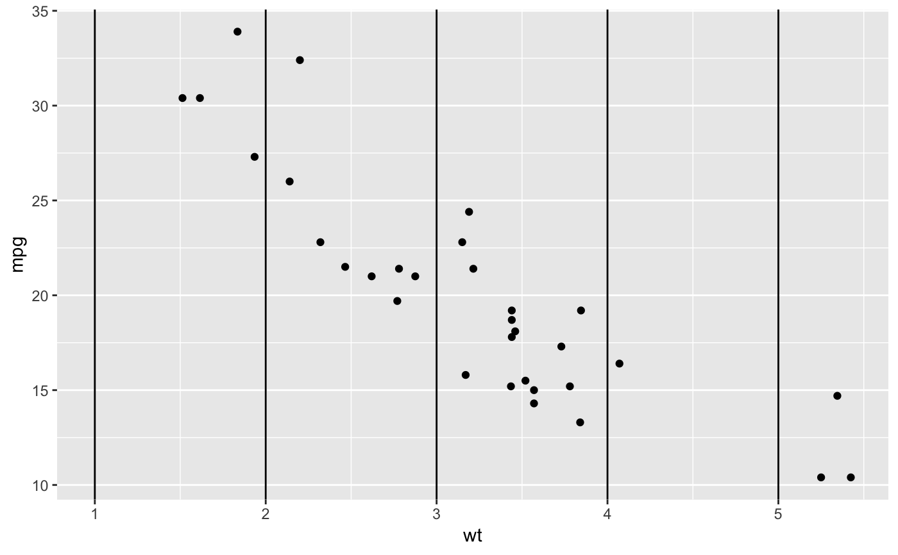
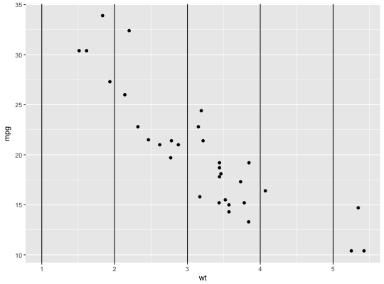
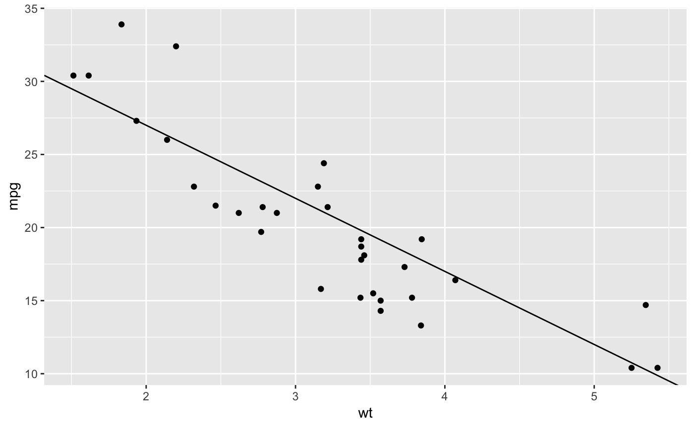
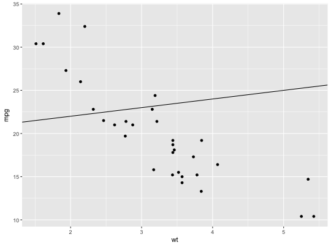
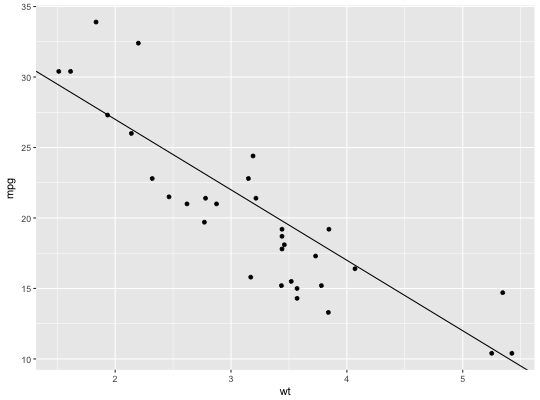
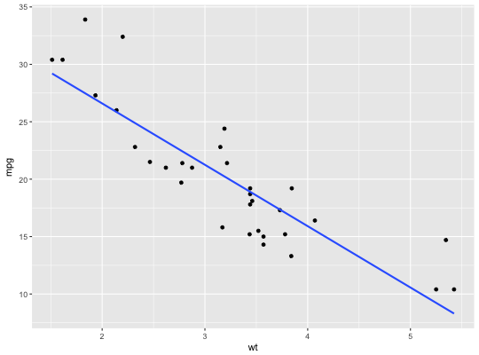
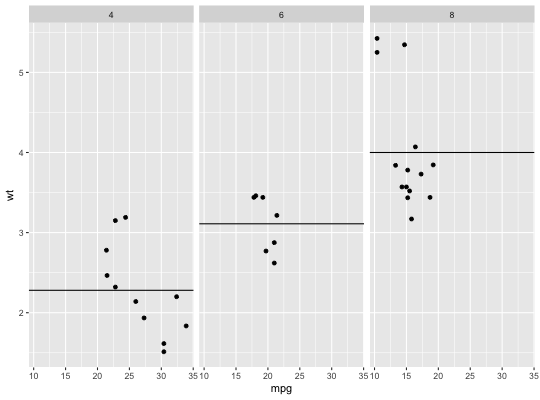
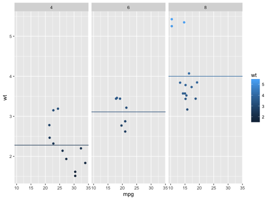

These geoms add reference lines (sometimes called rules) to a plot, either horizontal, vertical, or diagonal (specified by slope and intercept). These are useful for annotating plots.
geom_abline(mapping = NULL, data = NULL, ..., slope, intercept, na.rm = FALSE, show.legend = NA) geom_hline(mapping = NULL, data = NULL, ..., yintercept, na.rm = FALSE, show.legend = NA) geom_vline(mapping = NULL, data = NULL, ..., xintercept, na.rm = FALSE, show.legend = NA)
Set of aesthetic mappings created by aes or
aes_. If specified and inherit.aes = TRUE (the
default), it is combined with the default mapping at the top level of the
plot. You must supply mapping if there is no plot mapping.
The data to be displayed in this layer. There are three options:
If NULL, the default, the data is inherited from the plot
data as specified in the call to ggplot.
A data.frame, or other object, will override the plot
data. All objects will be fortified to produce a data frame. See
fortify for which variables will be created.
A function will be called with a single argument,
the plot data. The return value must be a data.frame., and
will be used as the layer data.
other arguments passed on to layer. These are
often aesthetics, used to set an aesthetic to a fixed value, like
color = "red" or size = 3. They may also be parameters
to the paired geom/stat.
If FALSE, the default, missing values are removed with
a warning. If TRUE, missing values are silently removed.
logical. Should this layer be included in the legends?
NA, the default, includes if any aesthetics are mapped.
FALSE never includes, and TRUE always includes.
Parameters that control the
position of the line. If these are set, data, mapping and
show.legend are overridden
These geoms act slightly different to other geoms. You can supply the
parameters in two ways: either as arguments to the layer function,
or via aesthetics. If you use arguments, e.g.
geom_abline(intercept = 0, slope = 1), then behind the scenes
the geom makes a new data frame containing just the data you've supplied.
That means that the lines will be the same in all facets; if you want them
to vary across facets, construct the data frame yourself and use aesthetics.
Unlike most other geoms, these geoms do not inherit aesthetics from the plot default, because they do not understand x and y aesthetics which are commonly set in the plot. They also do not affect the x and y scales.
These geoms are drawn using with geom_line so support the
same aesthetics: alpha, colour, linetype and
size. They also each have aesthetics that control the position of
the line:
geom_vline: xintercept
geom_hline: yintercept
geom_abline: slope and intercept
See geom_segment for a more general approach to
adding straight line segments to a plot.
p + geom_vline(xintercept = 1:5)p + geom_hline(yintercept = 20)p + geom_abline() # Can't see it - outside the range of the datap + geom_abline(intercept = 20)# Calculate slope and intercept of line of best fit coef(lm(mpg ~ wt, data = mtcars))#> (Intercept) wt #> 37.285126 -5.344472p + geom_abline(intercept = 37, slope = -5)# To show different lines in different facets, use aesthetics p <- ggplot(mtcars, aes(mpg, wt)) + geom_point() + facet_wrap(~ cyl) mean_wt <- data.frame(cyl = c(4, 6, 8), wt = c(2.28, 3.11, 4.00)) p + geom_hline(aes(yintercept = wt), mean_wt)# You can also control other aesthetics ggplot(mtcars, aes(mpg, wt, colour = wt)) + geom_point() + geom_hline(aes(yintercept = wt, colour = wt), mean_wt) + facet_wrap(~ cyl)